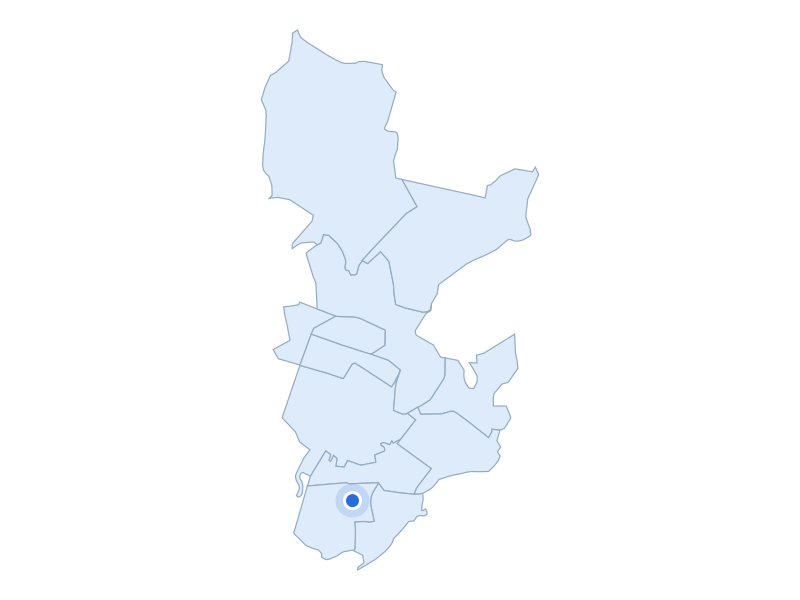

부동산 데이터 | 신혼부부가 사는 곳
거주 수 12위 · 경기 수원시 영통구

광교 원천호수 수변
지역 자료사진 · 촬영 2014 · CC BY-SA 4.0
주거·생활권을 실제 장소와 함께 비교합니다
거주 신혼부부 · 2024년
8,388쌍
주거 특징·랜드마크
영통구의 광교는 공동주택과 업무·상업 용지를 나눠 계획한 신도시 생활권입니다.
주거 특징·랜드마크
원천호수는 신대호수와 함께 광교호수공원을 이루며, 수변 보행데크와 산책로, 휴식 공간이 조성돼 있습니다.

경기 수원시 영통구 · 실제 가격 집계구역
파란 점: 단지 위치
지역 아파트 실거래 중위값
8억 3,000만원
지역 거래 855건
단지 사례
망포마을쌍용1차
7억 4,000만원
단지 거래 9건
2026-05-01 ~ 2026-10-31 계약
전용 83~85㎡ · 아파트 매매 · 취소 제외